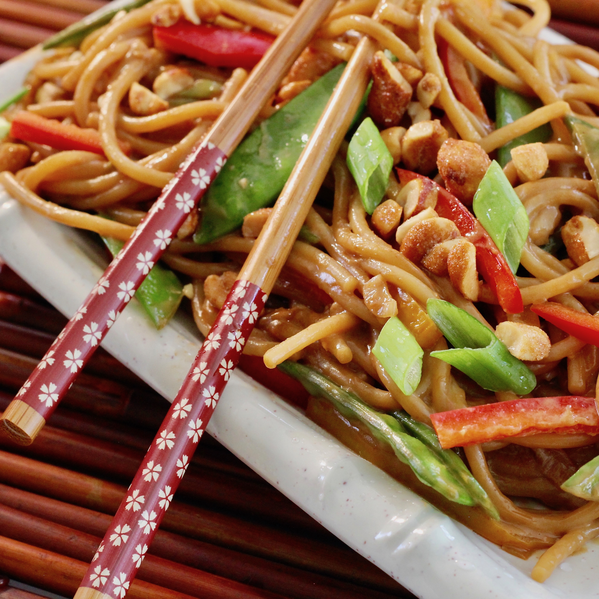

Peanut Noodles

Description
A delicious peanutty noodle dish! This recipe was copied from AllRecipes.com as part of my first project for the Odin Project. You can find the original recipe here.
Ingredients
- 8 ounces spaghetti
- 1 bunch green onions, sliced (white parts only)
- 2 tablespoons sesame oil
- 1 teaspoon minced fresh ginger root
- ⅓ cup peanut butter
- ¼ cup soy sauce
- ¼ cup hot water
- 1 tablespoon cider vinegar
- 1 teaspoon white sugar
- ¼ teaspoon crushed red pepper flakes
Steps
- Cook pasta in a large pot of boiling water until done. Drain.
- Meanwhile, combine oil and onions in a small skillet. Saute over low heat until tender. Add ginger; cook and stir for 1 to 2 minutes. Mix in peanut butter, soy sauce, water, vinegar, sugar, and red pepper flakes. Remove from heat.
- Toss noodles with sauce, and serve.
Nutritional Information
Per Serving: 568 calories; protein 19.7g; carbohydrates 70.1g; fat 24.8g; sodium 1351.6mg